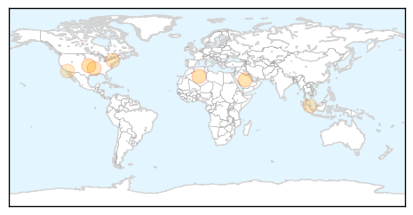
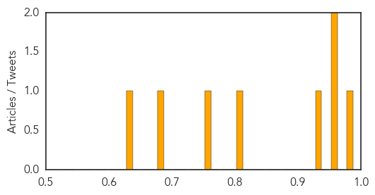

Influenza
30-Day Web Trend
0 alerts, 0 warnings

30-Day Twitter Trend
4 alerts, 0 warnings

Article Locations
Article Confidences
Top Articles:
- 0.980
- Officials Emphasize Flu Vaccine For Children, Health Care Workers « CBS Seattle
- 0.973
- Doctors Advise Residents to Get Flu Vaccines before the Flu Season Begins
- 0.967
- Study shows Israeli elderberry extract effective against avian flu
- 0.930
- Qatar- SCH advises vaccination
- 0.814
- Genetically modified chickens could beat bird flu
- 0.751
- September 7, 2015 Archives
- 0.676
- Vampire bats and sand flies inspire a career in public health after two decades of military service
- 0.645
- Contagious viral disease leads to suspension of imported horses from Malaysia to Singapore, Singapore News & Top Stories
Top Tweets:
- 0.798
- RT: Influenza B virus lineage comeback behind Queensland horror flu season [I totally rewrote that headline] http://t.co/A6DCq…
West Nile Virus
30-Day Web Trend
1 alerts, 0 warnings

30-Day Twitter Trend
1 alerts, 0 warnings

Article Locations

Article Confidences

Top Articles:
- 0.992
- Identity of North Carolina West Nile victim released
- 0.987
- Blood donor tests positive for West Nile Virus
- 0.963
- West Nile still posing threat
- 0.947
- Four new cases of West Nile virus in Mississippi bring total to 22
- 0.842
- Mosquito traps test positive for West Nile Virus in Nordonia Hills communities - News Leader
- 0.742
- 36. Charting the Course of a Globe-Trotting Pathogen
- 0.699
- Mississippi reaches 22 case of West Nile virus this year
- 0.669
- In Washington, West Nile virus makes a comeback
Top Tweets:
-
No tweets found for Sep 08, 2015